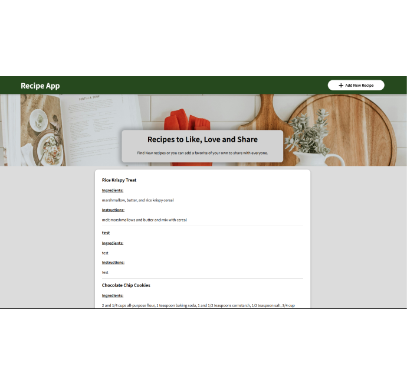

Project Overview
The Recipe Sharing and Meal Planner Web App is a comprehensive platform designed to help users share and
explore recipes, plan meals for the week, and manage their cooking schedules. The app features user
authentication, personalized dashboards, and a meal planner with drag-and-drop functionality, allowing users
to organize meals according to their preferences and dietary needs.
Methods
To build the Recipe Sharing and Meal Planner Web App, I utilized the Flask framework for the backend and
PostgreSQL for the database. The app supports user registration and login, CRUD operations for recipes, and a
meal planner that enables users to drag and drop recipes into their weekly schedule. Additionally, I
implemented advanced filtering and search functionality for recipes based on ingredients, cuisine, and dietary
preferences.
Tools
The primary tools and technologies used included:
- Languages & Frameworks: React.js, JavaScript, HTML, CSS
- Styling: Bootstrap, Styled Components, Google Fonts, Font Awesome
- Backend & Database:Flask(python) & PostgreSQL
- Version Control: Git/GitHub
- Utilities: Unsplash for images, Adobe Express for logo design
- Development Environment: Visual Studio Code
- Deployment:Railway
- Visualization Chart.js for interactive charts
Users
The primary users are individuals interested in cooking and meal planning. The app is intended for anyone
looking to explore new recipes, save their favorites, and organize their meals. This could include home cooks,
food enthusiasts, or anyone seeking a more structured approach to meal planning.
Details and Findings
Design Decisions
-
Color Scheme & Layout: I selected a clean and simple color scheme, using soft tones to
create an inviting and easy-to-navigate interface. The layout emphasizes usability, making it easy for users
to find and explore recipes.
-
Meal Planner Design: The drag-and-drop functionality of the meal planner was designed for
an intuitive experience, allowing users to easily plan their meals by adding and organizing recipes for each
day of the week.
-
Search Functionality: Advanced search and filter options were incorporated, allowing users
to filter recipes by ingredients, cuisine, and dietary preferences. This feature was essential for providing
a personalized experience.
Strongest Features
-
User Dashboard: This personalized dashboard provides users with activity stats, such as
their most-planned recipes and favorite meals, making it a central hub for tracking and planning meals.
-
Recipe CRUD Operations: The ability for users to create, read, update, and delete recipes
allows them to manage their recipe collection effectively.
-
Meal Planner: The weekly meal planner with drag-and-drop functionality is one of the
strongest features, as it enables users to easily organize and plan meals for the week.

Preview of the site
Problems I Encountered and What I Learned
Challenges
-
Meal Planner Usability: Ensuring the meal planner was intuitive and easy to use required
constant user testing and adjustments.
-
Handling Image Uploads: File management for recipe images posed challenges with size limits
and efficient storage.
-
Optimizing Search Queries As the recipe database grew, optimizing search and filter queries
was essential to maintain performance.
-
Responsive Design: Making sure the app functioned smoothly across different devices
required fine-tuning of the layout and design..
Solutions and Lessons So Far
-
To improve meal planner usability, I implemented iterative design changes based on user feedback.
Simplifying the drag-and-drop process and providing clear visual cues enhanced the overall user experience.
-
For handling image uploads, I implemented size limits and compressed images before storage, ensuring faster
upload times and saving storage space.
-
To optimize search queries, I used indexing and caching strategies in PostgreSQL, which significantly
improved performance when users searched for recipes or applied multiple filters.
-
I ensured responsive design by employing a mobile-first approach and thoroughly testing on different screen
sizes to ensure the app’s layout adapted seamlessly.
Takeaways so far
I improved my skills in Flask and Python for building scalable web
applications, particularly in handling user authentication, dynamic content rendering, and backend
integration. I gained valuable experience with PostgreSQL and learned how to manage a relational database with
multiple user-generated inputs. I learned how to create a smooth, user-friendly UI/UX with an emphasis on
responsive design and interactive features like the drag-and-drop meal planner.
Results so far
The app successfully facilitates users in managing their meal plans and
organizing recipes. The user engagement increased as users utilized the planner, rating and reviewing recipes
more often. The search and filtering functionalities were optimized, improving speed and performance even with
large datasets. The drag-and-drop meal planner was a standout feature, leading to positive feedback from users
for its usability.